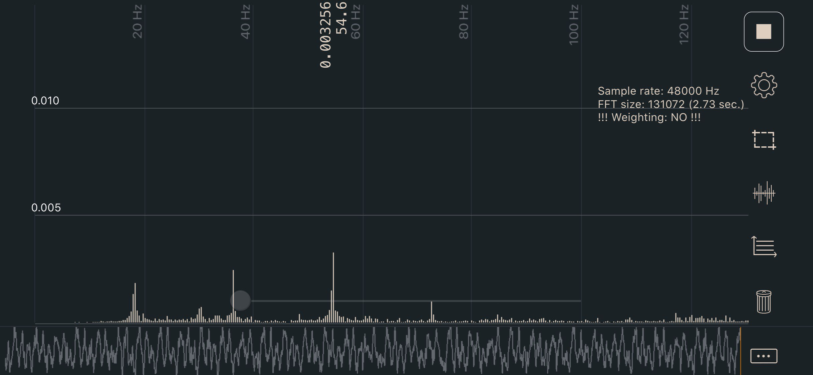
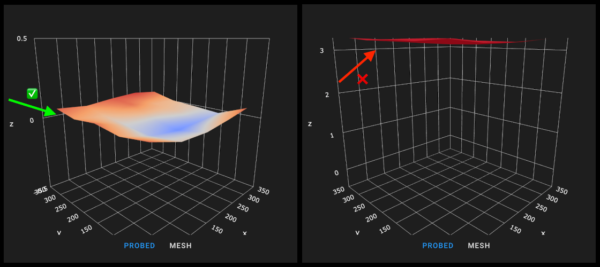

Tuning steps and processes after everything is working.
Check out Nero’s video on gantry racking
This value equals ~2lb of tension on XY, which is on the lower end of the range but should be a good initial setting (without stretching your belts too tight). The phone app I am using is called Sound Spectrum Analysis on iOS, the image below shows the output (not of my belts).

Generally when your Voron is first built, Bed Mesh is not necessary. However, it can still be used as an analysis tool to check assembly and see if there’s anything obviously incorrect–just don’t run SAVE_CONFIG at the end of your BED_MESH_CALIBRATE, and run BED_MESH_CLEAR after running bed mesh.
The [bed_mesh] configuration options can be found on the Klipper website described in detail. A sample configuration for your Voron printer can be found here.
[bed_mesh]
speed: 300
horizontal_move_z: 10
##--------------------------------------------------------------------
## Uncomment below for 250mm build
#mesh_min: 40, 40
#mesh_max: 210,210
## Uncomment for 300mm build
#mesh_min: 40, 40
#mesh_max: 260,260
## Uncomment for 350mm build
#mesh_min: 40, 40
#mesh_max: 310,310
##--------------------------------------------------------------------
fade_start: 0.6
fade_end: 10.0
probe_count: 5,5
algorithm: bicubic
relative_reference_index: 12
Generally a 5x5 grid is acceptable for even the largest Voron printer, but you can adjust the points to be greater or less than that. It is recommended to use an odd value for numbers of points in X and Y, such as 3x3, 5x5, or 7x7, so that there is always a probe point in the center of your bed.
As we use the probe as a relative and not absolute measurement device, it is critical that you have the relative_reference_index parameter. This value will change as you adjust your mesh size:
relative_reference_index = ()(x points * y points) - 1) / 2
3x3 mesh = 4
5x5 mesh = 12
7x7 mesh = 24, etc
You should check your mesh before printing to make sure it sits around 0 on the z axis:

Due to the the use of a thinner prusa-style bed on the switchwire, it will generally require the use of a bed mesh. It should not generally be necessary to make any major adjustments to the mesh configuration included in the stock configuration files, however, if you do wish to fine tune it, detailed information can be found on the Klipper website. Note that unlike other Voron models, the Switchwire uses the probe as a virtual endstop, and thus should NOT use relative_reference_index.
To calibrate the mesh on your printer, it is important to check that your probe is correctly calibrated, using PROBE_CALIBRATE, and that your printer is homed (G28). Next, run BED_MESH_CALIBRATE which will actually execute the probing process. Once this completes, you may wish to pause, and inspect the mesh using the visualizer functions built into fluidd/mainsail or the Bed Mesh Visualizer plugin for Octoprint. Assuming the mesh looks plausible, you may now run SAVE_CONFIG to store the mesh permanently, and restart your printer.
Input Shaper is a Klipper-specific software technique for reducing ringing (also known as echoing, ghosting or rippling) in prints. See the Klipper guide on configuring Input Shaper for more details and the complete process.
Andrew Ellis’ Print Tuning Guide, covering print/printer tuning and troubleshooting, slicer tricks, macro tricks, and more.